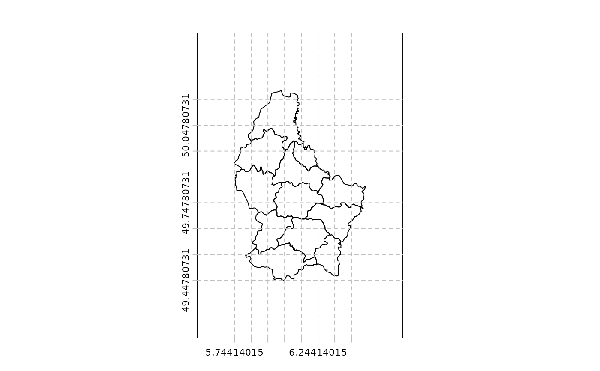

Adaptation of abline that allows adding a horizontal or vertical lines to a map. This function will place the lines in the locations within the mapped area as delineated by the axes. It is meant to be used when you specify your own tick marks, such that add_grid does not work.
Also see graticule
add_abline(h=NULL, v=NULL, ...)
Arguments
- h
the y-value(s) for horizontal line(s)
- v
the x-value(s) for vertical line(s)
- ...
additional graphical parameters for drawing lines
Examples
v <- vect(system.file("ex/lux.shp", package="terra"))
atx <- seq(xmin(v), xmax(v), .1)
aty <- seq(ymin(v), ymax(v), .1)
plot(v, pax=list(xat=atx, yat=aty), ext=ext(v)+.2)
add_abline(h=aty, v=atx, lty=2, col="gray")
